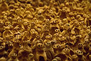
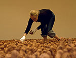
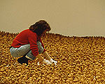

|
|
Antony Gormley:
Field for the British Isles 'Field for the British Isles' is one of Antony Gormley's best-loved works of art, featuring 40,000 clay figures handmade by a community in St Helen's on Merseyside. Drawing on his background in anthropology and his interest as a figurative sculptor in the relative perception of space and mass, the artist's concept of a 'field' of surrogate human beings first took shape in New York and Sydney in 1989. Much larger versions of Field were subsequently made in Mexico, Brazil and Sweden, leading on to 'Field for the British Isles' in 1993. Since its acquisition by the Arts Council Collection in 1996, with the support of the Henry Moore Foundation and the National Art Collections Fund, Field has been seen by more than 250,000 people at venues throughout the UK. A National Touring Exhibition from the Hayward Gallery, Field will have its first London showing since 1996 in the Great Court's special exhibition space at the heart of The British Museum. Here Antony Gormley's 'terracotta army' will have a unique resonance in relation to the archaeological collections displayed throughout the Museum's permanent galleries, evoking what the artist perceives as 'the spirit of the ancestors; the primal population made of the earth, where mud takes on the attributes of sentience and the evocation of the unborn'. Field's members, according to one critic, 'seem as if they have, unaccountably, migrated to the modern gallery space from somewhere infinitely more ancient'. Migrating in the opposite direction, the visitor will be able to comprehend the work as part of a nexus of collective memory, represented by the material culture of civilizations reaching back into the 7th millennium BC, a distributed gathering of lime plaster, stone, clay, terracotta, ivory, bone and ceramic figurines from Jordan, Syria, Anatolia, S.W. Iran, Greece, the Cyclades, Cyprus, Egypt, Pakistan, north west and southern India, China, Mexico and Serbia: idols, votive and fertility figures that connect with myths of creation, the negotiation of mankind's journey through this life and the world beyond. Links to the Museum's archaeological collections will be made through a 'trail' of individual figures from Field, placed within cases in the main galleries; the exhibition guide written by Professor Lord Renfrew, McDonald Professor of Archaeology at Cambridge; an on-line COMPASS tour and a substantial educational and public events programme. In addition to the installation of Field, there will be a separate exhibition in the Museum's Prints and Drawings gallery of around 40 of Antony Gormley's works on paper and sketchbooks (24 October 2002 - 21 April 2003). This will mark the publication by British Museum Press of the first comprehensive study of his drawings by Anna Moszynska, sponsored by The Blessing Way Foundation and White Cube. For further information and images, please contact the Press Office. Direct tel: 020 7323 8583 or e-mail: media@thebritishmuseum.ac.uk
|
 A
Close up of Field for the British Isles.  A
voluteer installing Field for the British Isles 
A Close up of Field for the British Isles.
|
||
|
|
|||